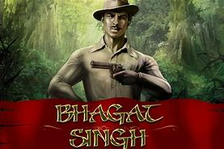
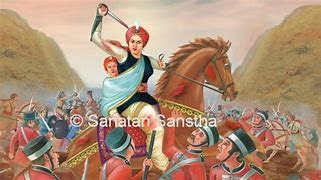
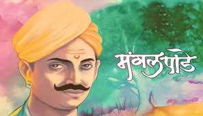
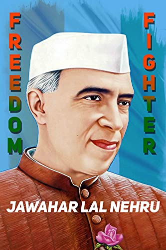
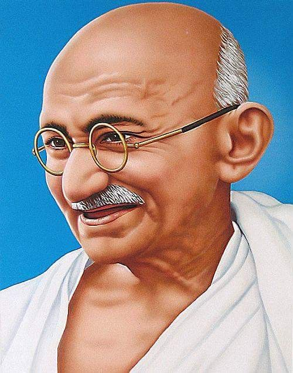
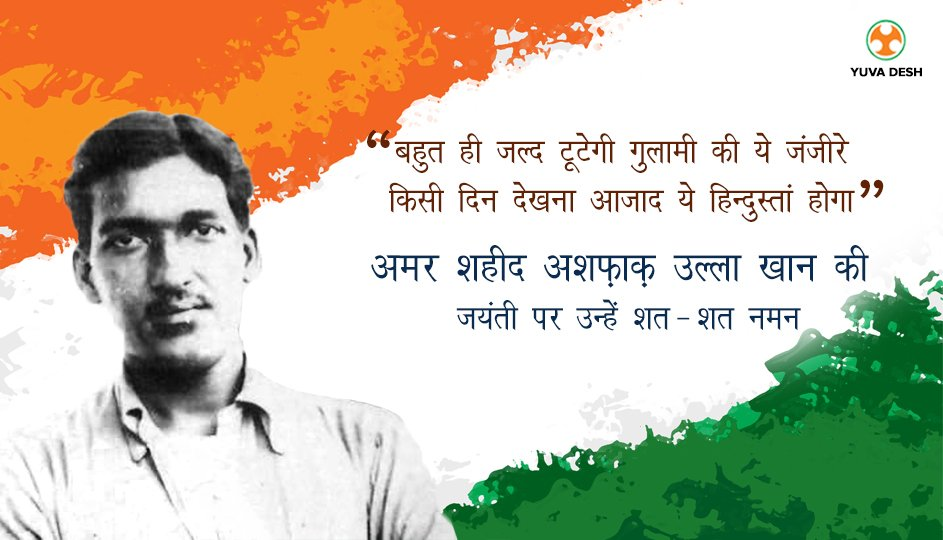
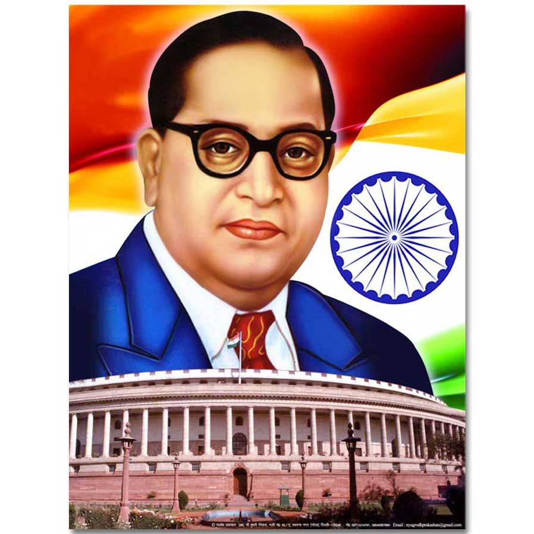

|  |
Bhagat Singh, (born September 27, 1907, Lyallpur, western Punjab,
India [now in Pakistan]
—died March 23, 1931, Lahore [now in Pakistan]),
revolutionary hero of the Indian
independence movement. Bhagat
Singh attended Dayanand Anglo Vedic High School,
which was operated
by Arya Samaj (a reform sect of modern Hinduism),
and
then National College, both located in Lahore. He began to protest British
rulef
in India while still a youth and soon fought for national independence.
He
also worked as a writer and editor in Amritsar for Punjabi- and Urdu-language
newspapers
espousing Marxist theories. He is credited with popularizing
the catchphrase “Inquilab zindabad”
(“Long live the revolution”). |
|
|  |
Lakshmi Bai, also spelled Laxmi Bai, (born c. November 19, 1835, Kashi,
India—died June 17, 1858, Kotah-ki-Serai, near Gwalior), rani (queen) of Jhansi
and a leader of the Indian Mutiny of 1857–58.
Brought up in the
household of the peshwa (ruler) Baji Rao II, Lakshmi Bai had an unusual
upbringing for a Brahman girl. Growing up with the boys in the peshwa’s court,
she was trained in martial arts and became proficient in sword fighting
and riding. She married the maharaja of Jhansi, Gangadhar Rao, but was widowed
without bearing a surviving heir to the throne. Following established
Hindu |
|
|  |
Mangal Pandey, (born July 19, 1827, Akbarpur, India—died April 8, 1857, Barrackpore),
Indian soldier whose attack on British officers on March 29, 1857, was the first
major incident of what came to be known as the Indian, or Sepoy, Mutiny (in India the
uprising is often called the First War of Independence or other similar names).
Pandey was born in a town near Faizabad in what is now eastern Uttar Pradesh state
in northern India, although some give his birth place as a small village near
Lalitpur (in present-day southwestern Uttar Pradesh). He was from a high-caste
Brahman landowning family that professed strong Hindu |
|
|  |
Jawaharlal Nehru, byname Pandit (Hindi: “Pundit” or “Teacher”) Nehru, (born November 14, 1889, Allahabad,
India—died May 27, 1964, New Delhi), first prime minister of independent India (1947–64), who
established parliamentary government and became noted for his neutralist
(nonaligned) policies in foreign affairs. He was also one of the principal leaders
of India’s independence movement in the 1930s and ’40s.
Early years
Nehru was born to a family of Kashmiri Brahmans, noted for their administrative
aptitude and scholarship, who had migrated to Delhi early in the 18th century. He
was a son of Motilal Nehru, a renowned lawyer and leader of the Indian independence movement,
who became one of Mohandas (Mahatma) Gandhi’s prominent associates. Jawaharlal was the eldest of
four children, two of whom were girls. A sister, Vijaya Lakshmi Pandit, later became the
first woman president of the United Nations General Assembly. |
|
|  |
Mohandas Karamchand Gandhi, who was also known as Mahatma, "Great Soul" Gandhi, was a hero,
as well as a political and spiritual leader of India. He was of the Hindu faith, of which I am too.
Mohandas brought India to independence by using non-violent resistance. He thought that there
was injustice being served to the Indians, especially to the immigrants by the South Africans
. Gandhi was born on October 2, 1869 in Porbandar, Kathiawar, now known as Gujarat.
Gandhi passed away at the age of 78 on January 30, 1948. Mahatma Gandhi was brought
up in India near Rajkot, where he did most of his studies. In 1888, Gandhi
went to London, leaving his wife and son behind, to pursue his degree in law.
Later in 1893, Gandhi went to South Africa to work and found that there was a lot of
prejudice towards Indians. That was the reason Gandhi began protesting and eventually
.
he became an inspiring hero for millions. The three main qualities that define
Gandhi as a hero are his strong leadership, simplicity and bravery. |
|
|  |
Ashfaqulla Khan was born on October 22, 1900 in Shahjahanpur,Uttar Pradesh.
He was the youngest of the six children of Shafiqur Rahman and Mazharunissa.
His father worked in the police department. Ashfaqulla was school student
when Mahatma Gandhi called for the Non-Cooperation Movement. This had a great
influence on him and shaped him to become a freedom fighter. He was labeled as a
terrorist by the British Government for his active participation in the train robbery
at Kakori.
After the Chauri Chaura incident,
Mahatma Gandhi’s withdrawal of the Non-Cooperation Movement left the youth
of India very much depressed. Ashfaqulla was one of them. He felt the urge
to free India as soon as possible and joined the extremists.
He made friendship
with Ram Prasad Bismil who was a famous revolutionary of Shahjahanpur and a member
of the Arya Samaj. In spite of their differences of faith, their common objective to free
India from the shackles of the British rule. |
|
|  |
Ambedkar was born on 14 April 1891 in the town and military cantonment of Mhow
(now officially known as Dr Ambedkar Nagar) (now in Madhya Pradesh).[15] He was
the 14th and last child of Ramji Maloji Sakpal, an army officer who held the
rank of Subedar, and Bhimabai Sakpal, daughterof Laxman Murbadkar.[16] His
family was of Marathi background from the town of
Ambadawe (Mandangad taluka) in Ratnagiri
district of modern-day Maharashtra.
Ambedkar was born into a Mahar (dalit)
caste, who were treated as untouchables and subjected to socio-economic
discrimination.[17]Company, and his father served in the British Indian Army
at the Mhow cantonment.[18] Although they attended school, Ambedkar
and other untouchable children were segregated and given little attention
or help by teachers. They were not allowed to sit inside the class.
When they needed to drink water, someone from a higher caste had
he described the situation later in his writings as "No peon, No Water".[19] He |
|